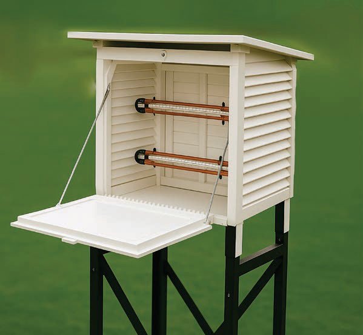

Kwa pamoja, kipimajoto cha kiwango cha juu na kipimajoto cha kiwango cha chini huhifadhiwa kwenye sanduku la kipekee linaloitwa skrini ya Stevenson (Stevenson screen). Skrini ya Stevenson ni sanduku la mbao lililopakwa rangi nyeupe. Rangi nyeupe husaidia kuakisi mwanga, hivyo kuzuia mionzi ya jua kuathiri viwango vya joto vinavyopimwa. Kielelezo namba 2 kinawakilisha skrini ya Stevenson.

Hatua za kupima jotoridi kwa kutumia kipimajoto cha kiwango cha juu
Weka kipimajoto cha kiwango cha juu nje, mahali ambapo kinaweza kuhisi joto la siku kama eneo la kivuli, lakini si moja kwa moja kwenye mwanga wa jua.
Subiri joto liwe juu, kadiri joto linavyoongezeka, zebaki ndani ya kipimajoto inatanuka na kupanda juu kwenye mrija wa kioo.
Ifikapo jioni, chukua kipimajoto na soma joto la juu, kwa kuangalia mahali ambapo onesho limefika. Kumbuka sehemu ya juu ambapo onesho imeishia ndio kiwango cha juu cha joto cha siku hiyo.
Rekodi namba iliyo karibu na mstari wa onesho kuonesha kiwango cha juu cha joto la siku.